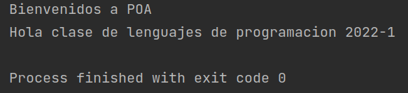

PROGRAMACIÓN ORIENTADA A ASPECTOS.
Ejemplos
En esa sección encontrarás diversos ejemplos del uso de lenguajes como Java o Ruby utilizando el enfoque de la programación orientada a aspectos
Ejemplo 1 - Cola Circular - AspectJ
En el siguiente codigo se desarrolla la estructura de una cola circular, a la cual van a acceder multiples hilos. Cuando varios hilos acceden a modificar un mismo elemento, se debe implementar sincronizacion entre estos ya que solo uno puede acceder al elemento a la vez.
Aqui podemos observar como el hecho de implementar aspectos que son necesarios pero que no corresponden a la funcionalidad basica dificultan la lectura del codigo, ya que se mezclan las funcionalidades. Para solucionar este problema se hace uso de la programacion orientada a aspectos, en donde vamos a separar la parte de sincronizacion(aspecto) de la cola circular(funcionalidad basica).
El resultado de utilizar este paradigma es una mayor modularidad en el codigo y mas claridad en este. Al separar la sincronizacion del codigo la clase resultante quedaria de la siguiente manera
Ejemplo 2 - Cuenta Bancaria - AspectJ
Para el siguiente ejemplo vamos a implementar una clase que será una version sencilla de una cuenta de banco. Esta clase tiene un atributo que indica el saldo actual de la cuenta, y tres metodos que realizan un deposito, una transaccion y un retiro. Ademas se requiere que cada vez que se realice un movimiento bancario se registre el tiempo en el que se realizó.
Nuevamente podemos ver la mezcla de las funcionalidades en el codigo, ya que los metodos no solo estan haciendo su funcionalidad(realizar un movimiento bancario) sino que tambien estan tomando el tiempo en el que se realizan. Para solucionar esto vamos a implementar un aspecto que va a cumplir con la funcion de registrar cada movimiento que se realice y el tiempo de este.
Y asi logramos abstraer esos conceptos que son transversales a la funcionalidad basica del programa y conseguimos dejar mas limpio el codigo principal.
Ejemplo 3 - Desarrollo de Consejos - Spring AOP
En este ejemplo mostraremos como realizar un consejo con el framework de desarrollo Spring orientado a aspectos. Supongamos que tenemos una incumbencia principal denominada CustomerService declarada de la siguiente manera.
En este codigo nos encontramos con 2 puntos de corte 1) el metodo printName() y 2) el metodo printName(). Nosotros queremos hacer un aspecto de checkeo de datos para garantizar que nuestros clientes siguen una regla del negocio planteadas a continuación:
En el codigo anterior podemos observar que se declaro el advice como before y va a verificar que la URL del cliente siga la regla del negocio. Si el cliente cumple con esta regla se imprimira un codigo mencionado que la URL es valida sino se imprimira que la URL es invalida y esta sera reemplazada por la cadena vacia. Para ver esto funcionando, tenemos que usar el lenguaje de especificación XML de Spring para que realice el Tejido y permita agregarle el consejo al punto de corte mencionado.
En este pedazo de codigo pudimos observar los concepts de Target, Advice y Proxy, siendo respectivamente los customerServices,CheckUrl y CustomerService proxy. El desarrollo de Spring teje el lenguaje de specificación XML con el siguiente codigo Java.
Y generar la siguiente salida
Ejemplo 4 - Loggin en spring
Este codigo esta escrito de manera de ejemplo para enseñar los conceptos basicos de la programación orientada por aspectos. Implementa de manera de ejemplo los 5 tipos de consejos (advices), tambien el uso de puntos de union y puntos de corte.
Ejemplo 5 - Hello World - Saludo a la clase de lenguajes de programación
Este es un ejemplo utilizando el lenguaje de programación Java y con el compilador AJC de AspectJ.
Para este ejemplo se crea una clase Hello la cual va a tener un método sayHello() que simplemente imprime Hola con
un espacio al final.
public class Hello {
public static void main(String[] args) {
sayHello();
}
public static void sayHello() {
System.out.print("Hola ");
}
}
También necesitamos el aspecto AspectHello, el cual define un punto de corte greeting(). Se aplican los consejos after y returning para imprimir el mensaje de saludo después de que se ejecute el método sayHello() de la clase Hello, y el método before para mostrar un mensaje en pantalla antes del saludo.
public aspect AspectHello {
pointcut greeting() : execution (* Hello.sayHello(..));
before(): greeting() {
System.out.println("Bienvenidos a POA");
}
after() returning() : greeting() {
System.out.println("clase de lenguajes de programacion 2022-1");
}
}
Al ejecutar la clase Hello obtendremos como resultado
Utilizando la gema Aquarium de Ruby
La gema Aquarium nos ofrece una amplia variedad de formas para ejecutar un advice. De forma análoga a los métodos que ofrece AspectJ es posible ejecutar un advice:
- Antes de la ejecución satisfactoria de un método.
- Tras la ejecución satisfactoria de un método.
- Antes y después de la ejecución satisfactoria de un método.
- Antes y después de la ejecución de un método aunque arroje un error.
- Después de la ejecución de un método que arrojó un error cualquiera.
- Después de la ejecución de un método que arrojó un error específico.

Ejemplo #6 - Utilizando la gema Aquarium de Ruby
En el siguiente ejemplo se puede ver de manera sencilla la implementación del enfoque del paradigma usando la gema Aquarium. Supongamos que tenemos nuestra clase Foo, y en esta tenemos un método cuya ejecución de crítica (critical_operation) el cual queremos necesitamos loggear tanto en su inicio como al terminar. En lugar de realizar la lógica de los logs dentro del método crítico, Aquarium nos permite redeclarar la clase y usar la palabra clave "around". Aquí es dónde podemos implementar la lógica para mostrar el mensaje o realizar otro tipo de procesos que necesitemos antes de la ejecución del método. El método no se ejecutará hasta llamar a "join_point.proceed". Una vez termine el proceso podemos mostrar el mensaje de salida indicando que la operación crítica ya ha concluido.

Ejemplo #7 - Utilizando la gema Aquarium de Ruby
Para este segundo ejemplo suponga que se está implementando una aplicación de tipo bancaria y para ello se tiene
una
clase Account.
Esta clase cuenta con un método debit que recibe una cantidad a debitar y realiza dos acciones:
- Chequea que la cantidad a debitar de la cuenta sea menor a el balance. De no ser así arroja una excepción.
- Ajusta el nuevo balance restando la cantidad debitada.
Y también un método credit que recibe una cantidad a acreditar a la cuenta y realiza dos acciones:
- Chequea que la cantidad a acreditar a la cuenta sea mayor a cero. De no ser así arroja una excepción.
- Ajusta el nuevo balance restando la cantidad acreditada.

Como es evidente en el código anterior, la aplicación necesita de aspectos como transactiones, persistencia y seguridad/autenticación. Estos aspectos son transversales a la aplicación y su implementación con ruby estándar seguramente llevará a un código muy disperso en el cual se vea comprometida la modularidad. Sin embargo, al usar la gema aquarium se puede realizar un refactor al código para adoptar las técnicas de la programación orientada a aspectos. Para ello se requieren realizar tres acciones:
- Antes de devolver el saldo de la cuenta, se debe: Leer el saldo actual de la store de persistencia o base de datos.
- Después de que cambie el saldo de la cuenta, se debe: Actualizar el nuevo balance en una store de persistencia o una base de datos.
- Antes de cambiar el saldo de la cuenta se debe: Autenticar y autorizar al usuario.

Ejemplo #8 - Utilizando decoradores en Python
A continuación se presenta un ejemplo realizado en Python utilizando decoradores para representar
el uso de la programación orientada a aspectos en dicho lenguaje.
En el ejemplo se usa un decorador para implementar una función transversal de la aplicación, la cual consiste en
verificar que un usuario que quiera realizar cierta operación sí sea un usuario válido.
Haz click aquí
para acceder al ejemplo dentro de un notebook de Google Colab.
Ejemplo #9 - Sistema de ventas de una tienda (Mira el código fuente en Github!)
Ahora, supóngase que una tienda desea implementar un sistema de ventas que permita controlar su inventario de
productos así como su estado financiero debido a la compra y venta de los mismos. Nótese en este punto cómo
ambos
contextos pueden llegar a ser complejos y extensos, por lo que se hace necesario separarlos en módulos que se
puedan manejar independientemente.
En resumen, queremos separar dos lógicas de negocio que deben trabajar juntas y ser consistentes entre sí,
¡aquí
es donde la Programación Orientada a Aspectos entrará en acción!
Primero, vamos a definir nuestro sistema principal de inventarios, no vamos a mencionar por ninguna parte
nuestro aspecto financiero, nos limitaremos a contar nuestras propias existencias.
Ahora bien, podemos definir nuestra lógica en el contexto financiero a través de la definición de un Aspecto y múltiples Puntos de Corte (Join Point) sobre nuestro Concepto definido con anterioridad.
Finalmente, puede verse el funcionamiento del sistema a continuación: